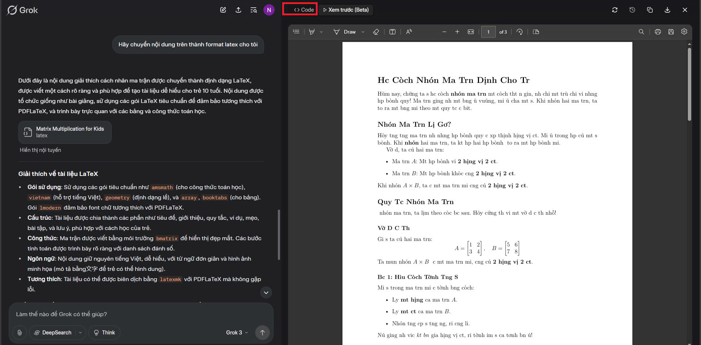
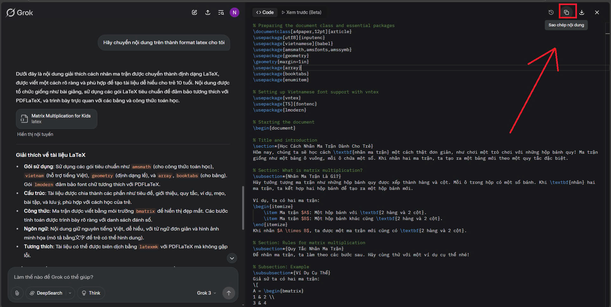
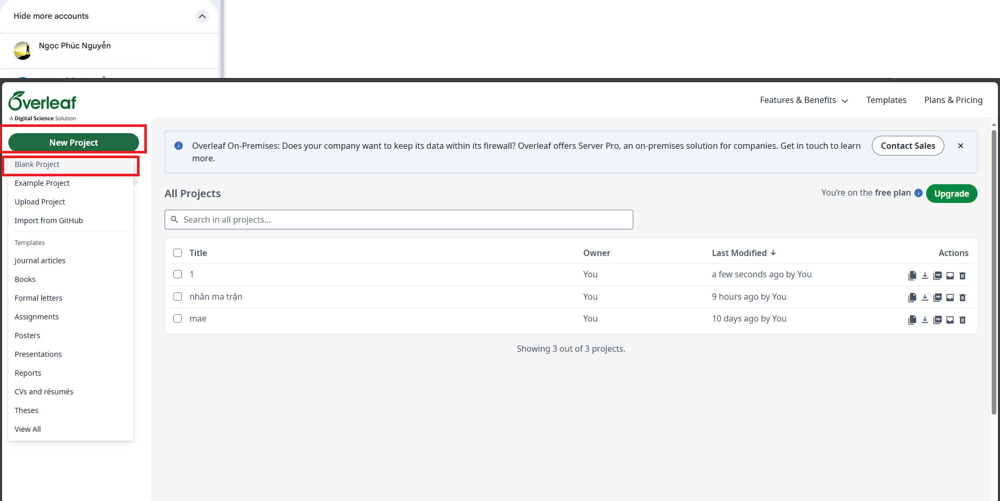
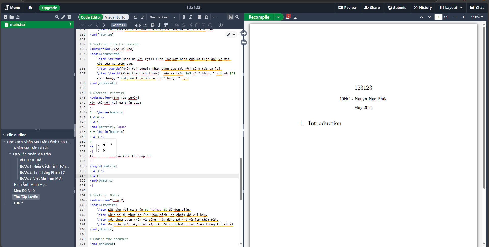
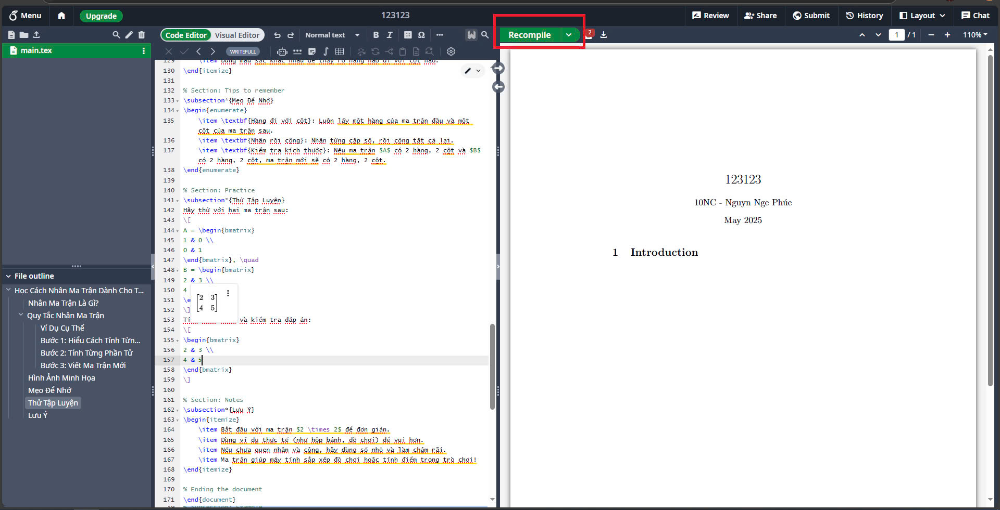
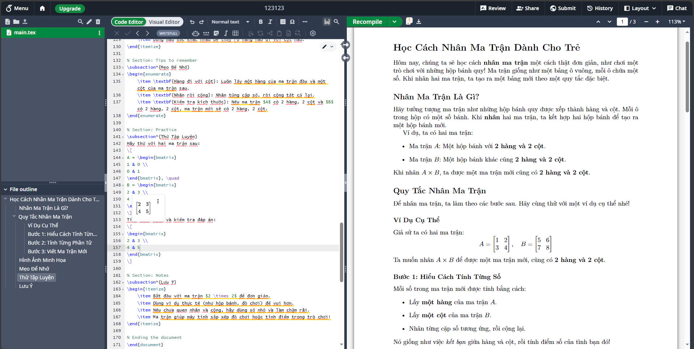

Cách Dùng AI và Overleaf Để Học Toán
Cách dùng AI để học toán hiệu quả
Trong bài viết này, mình xin chia sẻ một phương pháp hiệu quả để học Toán với sự trợ giúp của AI và Overleaf, một kỹ thuật hữu ích mà mình may mắn được thầy Mai Thanh Duy chỉ dạy.
Bước 1: Ra lệnh cho AI
Đầu tiên, hãy nhắn tin cho AI:
Hãy dạy <chủ đề cần học> cho 1 đứa trẻ 5/10 tuổi có thể hiểuT sẽ nhắn như sau:
Hãy dạy cách nhân ma trận cho 1 đứa trẻ 10 tuổi có thể hiểuMẸO: khi muốn dùng AI học bất cứ gì. Hỏi nó ở mức 10 tuổi trước, vẫn chưa hiểu thì chuyển xuống 5 tuổi.
Tại sao không hỏi thẳng 5 tuổi luôn ? : do 5 tuổi đôi lúc nó chỉ kỹ quá, như mấy thẳng không biết gì thật.
Bước 2: Chuyển sang format LaTeX
đọc bài giảng của nó nếu ưng ròi thì, nhắn tiếp:
Hãy chuyển nội dung trên thành format latex cho tôi* LaTeX là định dạng chuyên cho toán học
Lưu ý: Đến đây bạn có thể thấy LaTeX của trên giao diện AI đang bị lỗi font tiếng Việt, nhưng đừng vội đánh giá, cứ copy code LaTeX và paste vào Overleaf thử xem đã.
Bước 3: Sử dụng Overleaf lưu bài
Cách copy và paste vào Overleaf:
- Ấn vào nút code 
- Ấn nút copy 
- Qua Overleaf, chọn New Project → Blank Project 
- Paste vào khung bên trái (Ctrl + A → Delete → Ctrl + V) 
- Ấn Recompile 
- Kết quả sẽ hiện ra như này đẹp - nét - không lỗi, là quá ngon, nhưng có thể sẽ lúc AI ngu và có lỗi, ai bị lỗi mà tự xử được thì nhắn tin mình . 
Bước 5: Tải file PDF
Như trên là xong rồi nhưng nếu muốn tải xuống PDF thì ấn vào nút download này
Vậy là xong! Giờ bạn đã có một bài học toán được trình bày chuyên nghiệp với công thức rõ ràng!
Mẹo khi vượt quá giới hạn tin nhắn mỗi ngày
Tạo nhiều tài khoản gmail để dùng